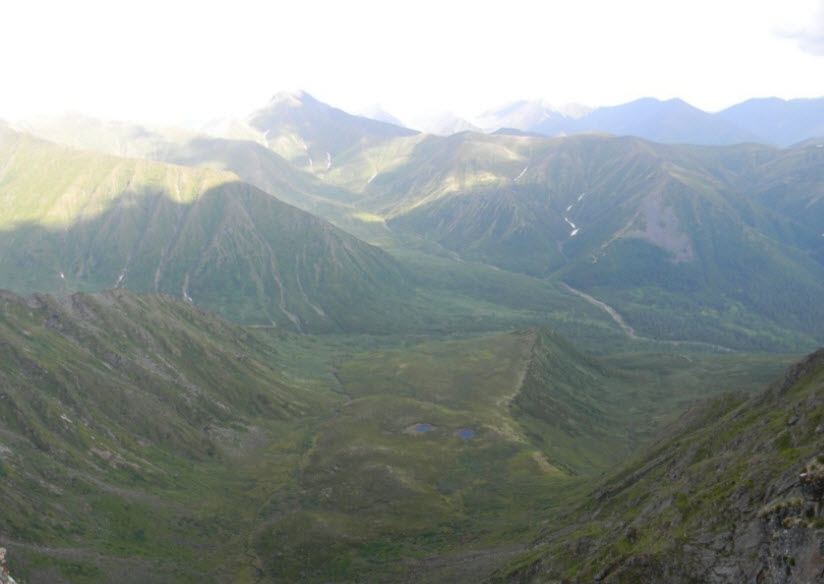

Достопримечательности Амурской области

Космодром «Восточный»
Современный российский космодром, расположенный в Амурской области. Один из самых значимых космических объектов страны.

Фестивали и праздники
Популярные культурные и исторические мероприятия региона, привлекающие туристов и местных жителей.

Набережная Благовещенска
Красивое место для прогулок с видом на реку Амур и китайский город Хэйхэ на противоположном берегу.

Живописные природные и исторические места
Разнообразные природные и исторические достопримечательности региона, которые стоит посетить каждому туристу.